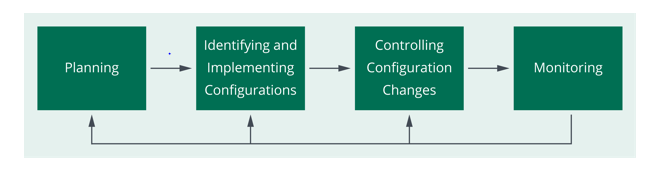

Software change and configuration management is an essential
discipline that oversees the security of software components throughout the life
cycle. The root of many problems with software security can be traced back to the
lack of proper configuration management implementations. There are also security
standards for describing weaknesses and vulnerabilities within software systems.
Objectives
Recognize security configuration standards and benchmarks.
Determine security standards for software weaknesses and vulnerabilities.
Overview
Organizations of all sizes and types that rely on technology and
maintain an IT infrastructure, whether on premises or in the cloud, have a need to
establish, document, and maintain security configuration standards for all their
critical software. Depending on the IT infrastructure component, maintaining this
secure configuration (i.e., updates) may be the sole responsibility of the
organization or of the cloud service provider, or a shared responsibility.
To manage software configurations, it is necessary to begin with
a baseline. A baseline configuration is defined in NIST Special Publication
800-128—Guide for Security-Focused Configuration Management of Information
Systems as “A set of specifications for a system, or Configuration Item
(CI) within a system, that has been formally reviewed and agreed on at a given point
in time, and which can be changed only through change control procedures. The
baseline configuration is used as a basis for future builds, releases, and/or
changes.”
Security hardening and locking down a system is a delicate
activity that requires a balance between functionality and security. Simply put, it
is not practical or feasible to harden a system to the point that would prevent the
system from delivering intended functions.
Inventory of Hardware and Software
Assets
Software and the systems that host them change over time.
Business needs result in software enhancements, patches for correcting software
flaws, and updating obsolete server hardware for examples. Implementing system
changes almost always results in some adjustment to the system configuration. To
ensure that the required adjustments to the system configuration do not adversely
affect the security of the system or interfere with the organization's operation of
the system, a well-defined configuration management process that integrates
is needed.
To address software weaknesses, organizations need to establish
a known baseline configuration that includes hardware and software. IT assets must
be inventoried. Changes to configuration baselines must be controlled. Typically,
organizations maintain a physical asset management system that can identify the
location of a computer. However, IT asset management systems generally contain more
information about assets including operating system versions, patching, and software
installations. The goal is to provide an enterprise picture of what, where, and how
assets are being used.
Benchmarks
CIS Benchmarks are best practices for the secure configuration
of a target system. Many standards and regulatory frameworks, including NIST
standards (e.g., SP 800-53), standards (e.g., ISO 27001), and
industry standards (e.g., PCIDSS) require application of secure
configurations/baselines.
Tools, techniques, and best practices are needed to eliminate
attack vectors and reduce the attack surface of the software through hardening. At a
high level and from a vendor/technology-neutral perspective, hardening activities
may involve disabling built-in accounts, unnecessary services, and unused ports,
among other activities. The actual hardening steps, however (e.g., for Apache Web
server 2.4.41), would not be technology agnostic.
Center for Internet Security
(CIS)
Developed by subject matter experts and through consensus among
government, industry, and academia, benchmarks are being adopted by public and private entities globally as the
best-practice security configuration guides.
Two different configuration profiles are generally available for
most CIS benchmarks. Depending on need, Level 1 or Level 2 profiles may be used.
The Level 1 profile is considered a base recommendation that can be implemented
promptly and is designed to not have an extensive performance impact. The intent
of the Level 1 profile benchmark is to lower the attack surface of your
organization while keeping machines usable and not hindering business
functionality.
The Level 2 profile is considered to be defense in depth and is intended for
environments where security is paramount. The recommendations associated with
the Level 2 profile can have an adverse effect on an organization if not
implemented appropriately or without due care.1
Note that in practice, regardless of which level profile is
used, testing should be conducted to determine potential impacts before implementing
production changes. Issues may potentially result from the implementation of various
controls in the benchmark.
Configuration standards in the United States for DoD systems
require compliance with a technical testing and hardening framework known as
.
The DoD releases STIG reports periodically for general consumption,
providing guidance for implementing security and locking down information
systems/software. There are hundreds of STIGS released by DoD with more being
released that extend an already broad list of baselines for operating systems,
servers, and network devices among other categories.2
There are three STIG compliance category levels3
where each category indicates the severity of the risk of failing to address a
particular software weakness. Category I is the most severe with Category III being
least severe.
Category I includes any that will result in the
loss of CIA and may result in loss of life, facility, or mission. It is
essentially a mission failure.
Category II includes any vulnerability that may result in the loss of CIA. It
may also result in personal injury or equipment damage. This is essentially
mission degradation.
Category III includes any vulnerability that degrades security measures
protecting CIA.
Security automation through is widely adopted within the security community. SCAP originated as part of
an initiative from the U.S. government for automation and standardization of
vulnerability management, and it has gained widespread support through major vendors
in the space of assessment/management. One
can think of SCAP as a way of automating STIG checking. As mentioned earlier, there
are hundreds of STIGs. Each contains many findings. For example, Windows Server 2022
version 1 has 30 Category I, 233 Category II, and 12 Category III findings. It would
not be feasible for security practitioners to check all STIG guidance for all
applications and operating systems in an enterprise without the help of automation.
The Red Hat community produces a STIG automation tool called OpenSCAP that also
supports STIG checking.
Security Automation and Continuous
Monitoring (SACM)
The Security Automation and Continuous Monitoring (SACM) Working Group (WG)
attempts to mature standards for security automation and monitoring. SACM WG seeks
to advance SCAP specifications into international standards and by ameliorating
security gaps. SACM WG has been working on identifying use cases (RFC
7632)4 and addressing them (RFC 8248)5. If successful, IETF
SACM WG may drive the definition of an international security automation standard in
the near future.
Software identification (SWID) XML tags are another promising
development within software security standards. Although SWID are not widely
adopted, some organizations leverage the technology to record unique information
about software applications and metadata, including name and version. SWID could aid
next-generation IT configuration management software in providing consistent
granular change and configuration management information.
Common Criteria (CC)
allows for the comparability of results between
independent evaluations.6 CC is useful as a guide for the development,
evaluation, and procurement of IT products with security functionality (NIST SP
800-12).
Federal Information Processing Standards are a set of standards
developed by the U.S. government for nonmilitary government agencies, government
contractors and vendors who work with federal information systems and software.
establishes
requirements to ensure computer security and interoperability. Historically, FIPS
guidance is produced when industry or international standards do not already exist.
ISO/IEC 15288
ISO 15288: Systems and Software Engineering—System Life
Cycle Processes was updated in 2023 and describes the processes and life
cycle stages for system and application engineering. Software security practitioners
may benefit by comparing an organization’s present technical processes to the
fourteen technical processes described within the standard which include
integration, verification, validation, and disposal. The list below details all
fourteen technical processes.
Business or mission analysis process (clause 6.4.1)
Stakeholder needs and requirements definition process (clause 6.4.2)
System requirements definition process (clause 6.4.3)
Architecture definition process (clause 6.4.4)
Design definition process (clause 6.4.5)
System analysis process (clause 6.4.6)
Implementation process (clause 6.4.7)
Integration process (clause 6.4.8)
Verification process (clause 6.4.9)
Transition process (clause 6.4.10)
Validation process (clause 6.4.11)
Operation process (clause 6.4.12)
Maintenance process (clause 6.4.13)
Disposal process (clause 6.4.14)
The ISO/IEC 15288 standards are designed to accommodate the
development of any type of system or software whether the effort will result in
mass-produced systems, modular components, or one-off developments. ISO/IEC 15288 is
also flexible in that it supports stand-alone and highly integrated systems. Here we
have focused on the technical aspects of ISO/IEC 15288, but the standard also
includes considerations for enabling projects, contracts, and technical management.
Software Weakness and Vulnerability
Standards
Earlier, we discussed how SCAP is used to automate the process
of scanning and detecting potential issues in software. This process is made
possible in part by ,
which defines system configuration information, machine state, and results
reporting formats. OVAL specifies test procedures using a chronological checklist.
Defining STIG guidance programmatically in SCAP using OVAL is
only part of the equation. It is not enough to define configuration information,
machine state, and results reporting formats. Software issues must also be well
defined. MITRE's program provides a
list of vulnerabilities containing an identification number, description, and one or
more public references to a known issue in production software application. CVEs are
contained in the and
referenced by SCAP. Each CVE includes a score that represents a severity score on a scale from zero to 10. CVSS
scores may be used to prioritize which CVEs should be addressed first by an
organization.
NIST defines a vulnerability as a “weakness in an information
system, system security procedures, internal controls, or implementation that could
be exploited or triggered by a threat source.” This implies that a CVE is a
disclosed exploitable weakness in a particular production software version such as
Mozilla Firefox 104 or Adobe Reader 23. In contrast, there is also the standard
that
describes a taxonomy for identifying the common sources of software flaws (e.g.,
buffer overflows, failure to check input data) related to known poor coding
practices. Like CVSS providing severity scores for CVE, Common Weakness Scoring
System (CWSS) quantifies the severity of CWE.
CVE-2021-448327 describes part of the Apache Log4j2
vulnerability made popular in the security community in 2021. The CVE directly
describes the vulnerability in Log4j2. CWE-20: Improper Input Validation and CWE-74:
Improper Neutralization of Special Elements in Output Used by a Downstream Component
Injection are known software coding practices that resulted in the application being
exploitable. All this information and more is available within NVD.
It is important to point out that the establishment and initial
application of secure baseline configurations is just the beginning. The maintenance
and upkeep activities should ensure that any configuration drifts over time are
detected and corrected. According to NIST8: “The configuration of a
system and its components has a direct impact on the security posture of the system.
How the configurations are established and maintained requires a disciplined
approach for providing Changes to the
configuration of a system are often needed to stay up to date with changing business
functions and services, and information security needs. However, changes can
adversely impact the previously established security posture; therefore, effective
configuration management is vital to the establishment and maintenance of security
of information and systems.”
The secure configuration management (CM) process consists of
four steps:
Planning
Identifying and implementing configurations
Controlling configuration changes
Monitoring
8 Dennis Bailey, Kelley Dempsey, Sarbari Gupta,
Arnold Johnson, Ron Ross; Guide for Security-Focused Configuration Management of
Information Systems; National Institute of Standards and Technology; https://nvlpubs.nist.gov/nistpubs/SpecialPublications/NIST.SP.800-128.pdf;
retrieved May 2023.

Figure 5: Secure Configuration Management Process
Step 1: Planning
As with most other security activities, planning is needed for
any significant undertaking. This phase involves the development of policy and
procedures to incorporate secure configuration management into existing information
technology and security programs and then disseminating the policy throughout the
organization.
The policy addresses many different areas, such as the
implementation of secure CM plans; integration into existing security program plans,
configuration control boards (CCBs), configuration change control processes, tools
and technology; and the use of common secure configurations and baseline
configurations, monitoring, and metrics for compliance with established secure CM
policy and procedures.
Step 2: Identifying and Implementing
Configurations
After the planning and preparation activities are completed, a
secure baseline configuration for the information system is developed, reviewed,
approved, and implemented.
Once the organization has developed and documented a baseline
configuration, it should maintain it under the configuration management control.
NIST describes baseline configurations as “documented, formally reviewed and
agreed-upon sets of specifications for information systems or configuration items
within those systems. Baseline configurations serve as a basis for future builds,
releases, and/or changes to information systems.9”
For a typical information system, the secure baseline may
address configuration settings, software loads, patch levels, how the information
system is physically or logically arranged, how various are implemented, and
documentation.
In this phase of secure CM, the emphasis is put on the
management of change to maintain the secure, approved baseline of the information
system.
Using secure CM practices, organizations ensure that changes are
formally identified, proposed, reviewed, analyzed for security impact, tested, and
approved prior to implementation. As part of the configuration change control
effort, organizations can employ a variety of access restrictions for change
including access controls, process automation, abstract layers, change windows, and
and audit activities to
limit unauthorized and/or undocumented changes to the information system.
Step 4: Monitoring
Monitoring activities are used as the mechanism within secure CM
to validate that the information system is adhering to organizational policies,
procedures, and the approved secure baseline configuration.
Planning and implementing secure configurations then controlling
configuration change is usually not sufficient to ensure that an information system
that was once secure will remain secure.
Monitoring identifies undiscovered/undocumented system
components, misconfigurations, vulnerabilities, and unauthorized changes, all of
which, if not addressed, can expose organizations to increased risk.
Security Standards (2.2)
Software change and configuration management is an essential discipline that oversees the security of software components throughout the life cycle. The root of many problems with software security can be traced back to the lack of proper configuration management implementations. There are also security standards for describing weaknesses and vulnerabilities within software systems.
Objectives
Overview
Organizations of all sizes and types that rely on technology and maintain an IT infrastructure, whether on premises or in the cloud, have a need to establish, document, and maintain security configuration standards for all their critical software. Depending on the IT infrastructure component, maintaining this secure configuration (i.e., updates) may be the sole responsibility of the organization or of the cloud service provider, or a shared responsibility.
To manage software configurations, it is necessary to begin with a baseline. A baseline configuration is defined in NIST Special Publication 800-128—Guide for Security-Focused Configuration Management of Information Systems as “A set of specifications for a system, or Configuration Item (CI) within a system, that has been formally reviewed and agreed on at a given point in time, and which can be changed only through change control procedures. The baseline configuration is used as a basis for future builds, releases, and/or changes.”
Security hardening and locking down a system is a delicate activity that requires a balance between functionality and security. Simply put, it is not practical or feasible to harden a system to the point that would prevent the system from delivering intended functions.
Inventory of Hardware and Software Assets
Software and the systems that host them change over time. Business needs result in software enhancements, patches for correcting software flaws, and updating obsolete server hardware for examples. Implementing system changes almost always results in some adjustment to the system configuration. To ensure that the required adjustments to the system configuration do not adversely affect the security of the system or interfere with the organization's operation of the system, a well-defined configuration management process that integrates is needed.
To address software weaknesses, organizations need to establish a known baseline configuration that includes hardware and software. IT assets must be inventoried. Changes to configuration baselines must be controlled. Typically, organizations maintain a physical asset management system that can identify the location of a computer. However, IT asset management systems generally contain more information about assets including operating system versions, patching, and software installations. The goal is to provide an enterprise picture of what, where, and how assets are being used.
Benchmarks
CIS Benchmarks are best practices for the secure configuration of a target system. Many standards and regulatory frameworks, including NIST standards (e.g., SP 800-53), standards (e.g., ISO 27001), and industry standards (e.g., PCI DSS) require application of secure configurations/baselines.
Tools, techniques, and best practices are needed to eliminate attack vectors and reduce the attack surface of the software through hardening. At a high level and from a vendor/technology-neutral perspective, hardening activities may involve disabling built-in accounts, unnecessary services, and unused ports, among other activities. The actual hardening steps, however (e.g., for Apache Web server 2.4.41), would not be technology agnostic.
Center for Internet Security (CIS)
Developed by subject matter experts and through consensus among government, industry, and academia, benchmarks are being adopted by public and private entities globally as the best-practice security configuration guides.
Two different configuration profiles are generally available for most CIS benchmarks. Depending on need, Level 1 or Level 2 profiles may be used.
Note that in practice, regardless of which level profile is used, testing should be conducted to determine potential impacts before implementing production changes. Issues may potentially result from the implementation of various controls in the benchmark.
1 Center for Internet Security; “CIS Benchmarks FAQ”; https://www.cisecurity.org/cis-benchmarks/cis-benchmarks-faq/; retrieved May 2023.
Security Technical Implementation Guide (STIG)
Configuration standards in the United States for DoD systems require compliance with a technical testing and hardening framework known as . The DoD releases STIG reports periodically for general consumption, providing guidance for implementing security and locking down information systems/software. There are hundreds of STIGS released by DoD with more being released that extend an already broad list of baselines for operating systems, servers, and network devices among other categories.2
There are three STIG compliance category levels3 where each category indicates the severity of the risk of failing to address a particular software weakness. Category I is the most severe with Category III being least severe.
2 An Online STIG Viewer can be found at https://www.stigviewer.com/stigs. Retrieved May 2023.
3 U.S. Department of Defense; SRG/STIG Library Compilations; https://public.cyber.mil/stigs/compilations/; retrieved May 2023.
Security Content Automation Protocol (SCAP)
Security automation through is widely adopted within the security community. SCAP originated as part of an initiative from the U.S. government for automation and standardization of vulnerability management, and it has gained widespread support through major vendors in the space of assessment/management. One can think of SCAP as a way of automating STIG checking. As mentioned earlier, there are hundreds of STIGs. Each contains many findings. For example, Windows Server 2022 version 1 has 30 Category I, 233 Category II, and 12 Category III findings. It would not be feasible for security practitioners to check all STIG guidance for all applications and operating systems in an enterprise without the help of automation. The Red Hat community produces a STIG automation tool called OpenSCAP that also supports STIG checking.
Security Automation and Continuous Monitoring (SACM)
The Security Automation and Continuous Monitoring (SACM) Working Group (WG) attempts to mature standards for security automation and monitoring. SACM WG seeks to advance SCAP specifications into international standards and by ameliorating security gaps. SACM WG has been working on identifying use cases (RFC 7632)4 and addressing them (RFC 8248)5. If successful, IETF SACM WG may drive the definition of an international security automation standard in the near future.
4 https://www.rfc-editor.org/rfc/rfc7632, retrieved May 2023.
5 https://www.rfc-editor.org/rfc/rfc8248; retrieved May 2023.
Software Identification (SWID)
Software identification (SWID) XML tags are another promising development within software security standards. Although SWID are not widely adopted, some organizations leverage the technology to record unique information about software applications and metadata, including name and version. SWID could aid next-generation IT configuration management software in providing consistent granular change and configuration management information.
Common Criteria (CC)
allows for the comparability of results between independent evaluations.6 CC is useful as a guide for the development, evaluation, and procurement of IT products with security functionality (NIST SP 800-12).
6 Common Criteria Portal; https://www.commoncriteriaportal.org/; retrieved May 2023.
Federal Information Processing Standards (FIPS)
Federal Information Processing Standards are a set of standards developed by the U.S. government for nonmilitary government agencies, government contractors and vendors who work with federal information systems and software. establishes requirements to ensure computer security and interoperability. Historically, FIPS guidance is produced when industry or international standards do not already exist.
ISO/IEC 15288
ISO 15288: Systems and Software Engineering—System Life Cycle Processes was updated in 2023 and describes the processes and life cycle stages for system and application engineering. Software security practitioners may benefit by comparing an organization’s present technical processes to the fourteen technical processes described within the standard which include integration, verification, validation, and disposal. The list below details all fourteen technical processes.
The ISO/IEC 15288 standards are designed to accommodate the development of any type of system or software whether the effort will result in mass-produced systems, modular components, or one-off developments. ISO/IEC 15288 is also flexible in that it supports stand-alone and highly integrated systems. Here we have focused on the technical aspects of ISO/IEC 15288, but the standard also includes considerations for enabling projects, contracts, and technical management.
Software Weakness and Vulnerability Standards
Earlier, we discussed how SCAP is used to automate the process of scanning and detecting potential issues in software. This process is made possible in part by , which defines system configuration information, machine state, and results reporting formats. OVAL specifies test procedures using a chronological checklist.
Defining STIG guidance programmatically in SCAP using OVAL is only part of the equation. It is not enough to define configuration information, machine state, and results reporting formats. Software issues must also be well defined. MITRE's program provides a list of vulnerabilities containing an identification number, description, and one or more public references to a known issue in production software application. CVEs are contained in the and referenced by SCAP. Each CVE includes a score that represents a severity score on a scale from zero to 10. CVSS scores may be used to prioritize which CVEs should be addressed first by an organization.
NIST defines a vulnerability as a “weakness in an information system, system security procedures, internal controls, or implementation that could be exploited or triggered by a threat source.” This implies that a CVE is a disclosed exploitable weakness in a particular production software version such as Mozilla Firefox 104 or Adobe Reader 23. In contrast, there is also the standard that describes a taxonomy for identifying the common sources of software flaws (e.g., buffer overflows, failure to check input data) related to known poor coding practices. Like CVSS providing severity scores for CVE, Common Weakness Scoring System (CWSS) quantifies the severity of CWE.
CVE-2021-448327 describes part of the Apache Log4j2 vulnerability made popular in the security community in 2021. The CVE directly describes the vulnerability in Log4j2. CWE-20: Improper Input Validation and CWE-74: Improper Neutralization of Special Elements in Output Used by a Downstream Component Injection are known software coding practices that resulted in the application being exploitable. All this information and more is available within NVD.
7 National Institute of Standards and Technology; National Vulnerability Database; https://nvd.nist.gov/vuln/detail/CVE-2021-44832; retrieved May 2023.
Security-Focused Configuration Management
It is important to point out that the establishment and initial application of secure baseline configurations is just the beginning. The maintenance and upkeep activities should ensure that any configuration drifts over time are detected and corrected. According to NIST8: “The configuration of a system and its components has a direct impact on the security posture of the system. How the configurations are established and maintained requires a disciplined approach for providing Changes to the configuration of a system are often needed to stay up to date with changing business functions and services, and information security needs. However, changes can adversely impact the previously established security posture; therefore, effective configuration management is vital to the establishment and maintenance of security of information and systems.”
The secure configuration management (CM) process consists of four steps:
8 Dennis Bailey, Kelley Dempsey, Sarbari Gupta, Arnold Johnson, Ron Ross; Guide for Security-Focused Configuration Management of Information Systems; National Institute of Standards and Technology; https://nvlpubs.nist.gov/nistpubs/SpecialPublications/NIST.SP.800-128.pdf; retrieved May 2023.
Figure 5: Secure Configuration Management Process
Step 1: Planning
As with most other security activities, planning is needed for any significant undertaking. This phase involves the development of policy and procedures to incorporate secure configuration management into existing information technology and security programs and then disseminating the policy throughout the organization.
The policy addresses many different areas, such as the implementation of secure CM plans; integration into existing security program plans, configuration control boards (CCBs), configuration change control processes, tools and technology; and the use of common secure configurations and baseline configurations, monitoring, and metrics for compliance with established secure CM policy and procedures.
Step 2: Identifying and Implementing Configurations
After the planning and preparation activities are completed, a secure baseline configuration for the information system is developed, reviewed, approved, and implemented.
Once the organization has developed and documented a baseline configuration, it should maintain it under the configuration management control. NIST describes baseline configurations as “documented, formally reviewed and agreed-upon sets of specifications for information systems or configuration items within those systems. Baseline configurations serve as a basis for future builds, releases, and/or changes to information systems.9”
For a typical information system, the secure baseline may address configuration settings, software loads, patch levels, how the information system is physically or logically arranged, how various are implemented, and documentation.
9 National Institute of Standards and Technology; NIST SP 800-53—Security and Privacy Controls for Federal Information Systems and Organizations; https://csrc.nist.gov/publications/detail/sp/800-53/rev-5/final; retrieved June 2023.
Step 3: Controlling Configuration Changes
In this phase of secure CM, the emphasis is put on the management of change to maintain the secure, approved baseline of the information system.
Using secure CM practices, organizations ensure that changes are formally identified, proposed, reviewed, analyzed for security impact, tested, and approved prior to implementation. As part of the configuration change control effort, organizations can employ a variety of access restrictions for change including access controls, process automation, abstract layers, change windows, and and audit activities to limit unauthorized and/or undocumented changes to the information system.
Step 4: Monitoring
Monitoring activities are used as the mechanism within secure CM to validate that the information system is adhering to organizational policies, procedures, and the approved secure baseline configuration.
Planning and implementing secure configurations then controlling configuration change is usually not sufficient to ensure that an information system that was once secure will remain secure.
Monitoring identifies undiscovered/undocumented system components, misconfigurations, vulnerabilities, and unauthorized changes, all of which, if not addressed, can expose organizations to increased risk.